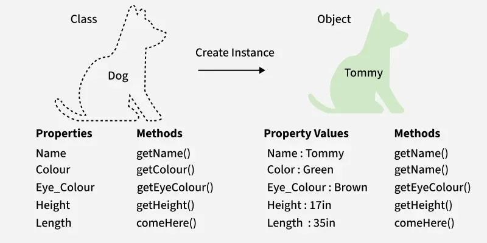
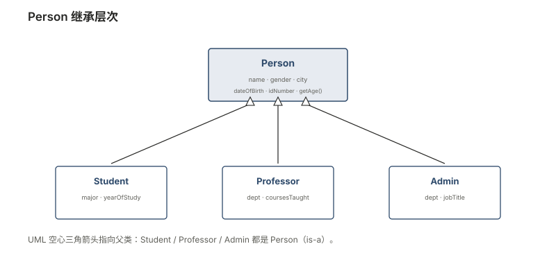

SOE102 · 第 6 章
对象与继承
Objects & Inheritance
虚线下划线为术语；悬停查看中文、英文与释义，完整词典见“术语”。
本章目录
本章在对象之上加一层继承：用 extends 复用父类的字段与方法，用 super() 接上父类构造器，用重写让子类给出自己的行为，再用向上转型与多态把不同子类放进同一个数组统一处理。
本章要点
- 继承让子类获得父类的实例变量与实例方法，目的是代码复用。
- Java 中一个类只能有一个直接父类，但一个父类可以被多个子类继承。
- 子类构造器必须先用 super(...) 调用父类构造器，且它必须是构造器的第一条语句。
- final 实例变量初始化后不可再改，改动会编译报错。
- 重写（overriding）发生在子类，方法名与参数列表都相同；重载（overloading）发生在同一个类，参数列表不同。
- 子类对象内部含有父类那一部分字段与方法，所以能调用父类的 getter。
- 向上转型由编译器隐式完成；向下转型必须显式写强制转换，且对象本身必须是那个子类。
- 多态：父类引用指向子类对象时，调用被重写的方法会执行子类版本。
6.1 复习：类、构造器、封装与 static
上一讲的数据类由四部分组成：实例变量、构造方法、实例方法与 static 方法，再加一个测试用的控制类。讲义用一张对照图说明：类声明变量名与类型；构造方法初始化实例变量；实例方法与 static 方法访问或修改这些变量；控制类里的 main 负责创建对象并调用。
三个复习要点值得再确认。第一，构造方法用 this. 区分同名的实例变量与参数：public Person(String name) { this.name = name; }，或者干脆把参数改名。测试客户端test client就是带 main 的类，用 new 调用构造方法创建并初始化对象。第二，字段设为 private 后，客户类写 James.name = "Yushan"; 会编译错误，只能通过 getName() 读取。第三，toString 返回这个对象的字符串表示，打印对象时会被自动调用。
讲义还复现了一个经典 bug：public ColorHSB(int n) { int hue = n; int saturation = 0; } 在构造方法里重新声明了同名局部变量，实例变量根本没被赋值。正确写法是去掉前面的类型声明，直接 hue = n;，或写 this.hue = n;。
W6 slide 6–19
6.2 继承：is-a 关系与代码复用
继承inheritance（也叫 subclassing）是 Java 的另一项 OOP 特性：定义一个新类（子类subclass或 child class），让它从另一个类（父类superclass或 parent class）那里继承实例变量（属性、状态）与实例方法（操作、行为），从而实现代码复用；子类还可以重新定义或重写父类的某些方法。
讲义的场景是一所大学要保存很多人的数据：学生、教师、行政人员。他们全都是 Person，共同拥有姓名、出生日期、性别、邮箱、手机、工号与 getAge()；学生额外需要专业与年级。如果不继承，就得把 Person 的字段与方法复制进 Student，一旦 Person 改动，每个子类都要跟着改。
判断能不能继承，看“是不是一种”（is-a）：Student is a Person，所以 Student 拥有 Person 的全部属性，能做 Person 能做的一切，还可能多做一点。写法只有一句 public class Student extends Person { }，此时 Student 只需要声明自己额外的那部分。
术语方向要记牢：Student 是 Person 的子类，Person 是 Student 的父类；Java 中一个类只能是一个父类的子类，但一个父类可以被许多子类继承——讲义的例子里 Professor、Student、Admin 都 extends Person。


绘图提示词
Clean vector UML-style class hierarchy diagram: one superclass box at the top labelled Person listing name, gender, city, dateOfBirth, idNumber and getAge(); three subclass boxes below labelled Student with major and yearOfStudy, Professor with dept and coursesTaught, and Admin with dept and jobTitle; solid lines with hollow triangular arrowheads pointing upward from each subclass to Person. Flat 2D, thin 1.5 px strokes, muted slate blue and warm grey palette, white background, English labels, no cartoon, no gradient, no shadow.
W6 slide 28–34
6.3 extends、final 与子类构造器
继承之后，子类只声明自己新增的字段。讲义把 Student 的专业与年级声明为 private final String major; 与 private final int yearOfStudy;。final 的含义是：这个实例变量一旦初始化就再也不能改，任何修改都会产生编译错误。用它是为了“确保不会意外被改动”。
子类仍然需要构造方法，并且要把所有参数（含父类那部分的）都接进来，先交给父类构造器，再处理自己的：
public Student(String name, String gender, String city,
String DoB, int id, int yearOS, String maj) {
super(name, gender, city, DoB, id); // 调用父类构造器
this.major = maj;
this.yearOfStudy = yearOS;
}super(...) 表示调用父类中对应的那个构造方法，而且必须是子类构造方法里的第一条语句——因为父类那部分必须先被初始化，子类才能接着初始化自己的部分。这与 this(...) 调用本类另一个构造器是同一类机制，两者不能同时出现在同一个构造方法里。
新字段同样要封装：给 yearOfStudy 与 major 各加一个 public getter，例如 getMajor() 返回 major。讲义提醒“只需要给需要读取的那些加”，不必机械地为每个字段都写。
W6 slide 35–41
6.4 子类对象里有什么
创建子类对象时，内存里并不是只有子类自己的字段。讲义明确写道：当创建 Student 类的对象时，父类的所有方法与字段都会在这个对象里获得一份内存；这正是“用子类对象也能访问父类成员”的原因。
可以把它想成两层：外层是 Student 新增的 major、yearOfStudy 与 getMajor()，内层是 Person 的 name、gender、city、dateOfBirth、idNumber 与 getAge()、toString()。对外看是一个 Student 对象，内部却包含了完整的 Person 部分。
由此可以推出两条实用结论。第一，子类对象可以直接调用父类的 public 方法，例如 s1.getName()；如果子类没有覆盖某个方法，用的就是父类版本。第二，父类的 private 字段虽然在对象里存在，子类代码却读不到，必须走 getter——这也解释了为什么 6.5 节重写 toString 时要靠一堆 getter 拼字符串。
W6 slide 41–45
6.5 方法重写：给子类自己的 toString
直接打印 Student 对象，得到的是从 Person 继承来的 toString，只显示 Person 那部分信息，学生的专业与年级不见了。原因是继承来的方法不知道子类新增了什么。
重写overriding就是在子类里重新实现一个从父类继承来的方法：方法名相同、参数列表相同，方法体换成子类自己的逻辑。Student 里再写一个 toString，它就会覆盖 Person 的版本：
@Override
public String toString() {
return "Student: name= " + this.getName()
+ ", gender= " + this.getGender()
+ ", city= " + this.getCity()
+ ", date of birth= " + this.getDateOfBirth()
+ ", idnumber= " + this.getIdNumber()
+ ", major: " + major
+ ", year of study= " + yearOfStudy;
}因为父类字段是 private，这里全部通过 getter 读取；@Override 是注解，用来让编译器检查“确实重写了一个父类方法”，拼错方法名时会报错，属于好习惯。重写之后，System.out.println(s1.toString()) 打印学生完整信息，而 p1.toString() 仍是 Person 的版本——两个类各自保留自己的实现。
W6 slide 46–50
6.6 重载与重写的区别
| 维度 | 重载 overloading | 重写 overriding |
|---|---|---|
| 发生位置 | 同一个类内 | 子类与父类之间 |
| 方法名 | 相同 | 相同 |
| 参数列表 | 必须不同（个数、类型或顺序） | 必须相同 |
| 返回类型 | 可以不同，但不构成签名差异 | 需兼容父类版本 |
| 绑定时机 | 编译期按参数选 | 运行期按对象实际类型选 |
讲义用构造函数重载作为重载的例子：同一个 Person 类里既有五参数的构造器，也有一参数、两参数的构造器，名字都叫 Person，靠参数区分。它还展示了 this(...) 的用法——一个构造器调用本类的另一个构造器，减少重复赋值：
public Person(String name, String gender, String city,
String DoB, int id) {
this(name, gender); // 调用本类两参数构造器
this.city = city;
this.dateOfBirth = DoB;
this.idNumber = id;
}
public Person(String name, String gender) {
this.name = name;
this.gender = gender;
}讲义把重载与重写都归到“多态”这个 OOP 术语之下：重写是“实现或替换一个继承来的方法”，重载是“同一个名字的多个实现”。注意继承层次里 this(...) 与 super(...) 都必须是构造器的第一条语句，因此一个构造器只能选其中一种。
W6 slide 21–24、47–52
6.7 向上转型与向下转型
既然 Student 是 Person，那么“用 Person 类型的变量指向 Student 对象”就是合法的：
Person p2 = new Student("A Student", "M", "China",
"1954-4-7", 193, 3, "Digital Media");
System.out.println(p2.getName()); // 可以
System.out.println(p2.getMajor()); // 编译错误这叫向上转型upcasting：从子类转到父类，编译器通常隐式完成，也可以显式写 p2 = (Person) s1;。注意变量 p2 的“静态类型”是 Person，编译器只允许调用 Person 上声明过的成员，所以 getMajor() 直接写就过不了编译，尽管对象里确实有这个方法。
反过来是向下转型downcasting：从父类转到子类，必须显式写强制转换，例如 s1 = (Student) p2;，之后才能调用 getMajor()。真正危险的是“对象本身并不是那个子类”的情况：Student t1 = new Person(...) 或把纯 Person 对象强转成 Student，都会在运行时失败——Person 不是 Student，也没有 extends Student。
讲义在这里给出了判断口诀：A Student is a Person，所以 Student 可以当 Person 用；A Person is NOT a Student，所以 Person 不能当 Student 用。转型方向永远沿着继承箭头走，逆着走就要显式强转并承担运行期风险。

W6 slide 53–57
6.8 多态：一个数组装下不同的人
多态polymorphism指的是：父类类型的变量可以指向任意子类对象，调用被重写过的方法时，执行的是该对象实际类型对应的版本。讲义的原话是“父类变量调用每个具体子类被重写的方法”。
Person[] people = new Person[3];
people[0] = new Person("James Bond", "M", "London", "1921-11-11", 007);
people[1] = new Student("A Student", "M", "China", "1954-4-7", 193, 3, "Digital Media");
people[2] = new Professor("A Professor", "F", "Suzhou", "1970-1-1", 42, "CS");
for (int i = 0; i < people.length; i++) {
System.out.println(people[i].toString());
}数组的元素类型是 Person，所以 Person 与它的子类都能放进去；循环里只写一次 toString()，Person 打印人物信息、Student 打印学生信息、Professor 打印教师信息——运行时自动选对版本。若要访问子类特有成员，仍要先判断并向下转型。
这套机制的价值在于“对扩展开放”：以后新增一个 Admin 子类，这个循环一行都不用改。讲义用 “same person, different views” 的说法收束全讲：同一个对象，从父类看是 Person，从子类看是 Student，方法的行为随实际类型而定。
资料缺口：讲义大纲页把 Comparable 与 Overriding、Overloading 并列列出，但正文没有给出 Comparable 接口的定义、compareTo 实现或排序示例，本章因此不展开；equals() 的覆写也明确说明“属于更进阶的 Java，本模块不覆盖”。
W6 slide 55–61